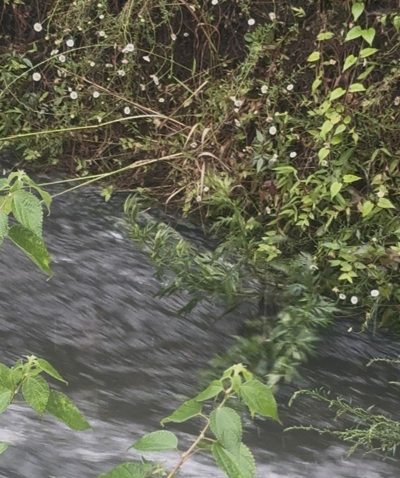

目次
今日見つけた花

今日は大雨でした。川を見ると、 早い流れにつられてすごいスピードで回転する植物と、 ハルジオンが咲いていました。
写真を撮って記録すると、その日の思い出も一緒に残せるので、 とても面白いと感じました。
今日の天気
今日は一日中大雨でした。 気圧の影響で頭痛が続き、少し憂鬱な気分になりました。
雨の日でも花は元気に咲いていて、 いつもとは違う景色を見ることができました。
今日のひとこと
毎日少しずつでも外へ出て花を見ると、 気温や天気の変化を感じることができます。
これからも今日出会った花を、 写真と一緒に記録していきたいです。